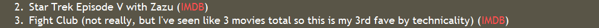
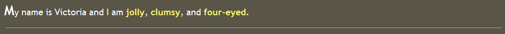
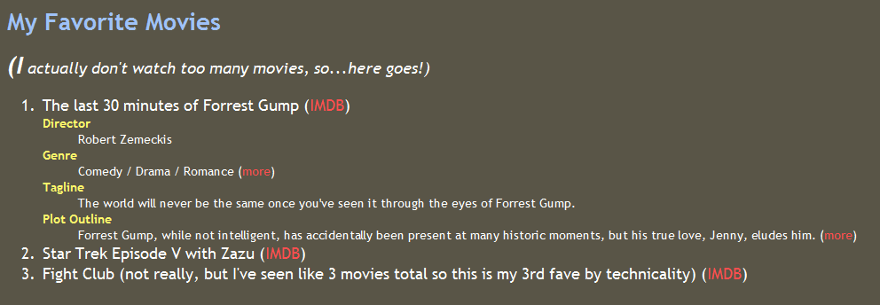
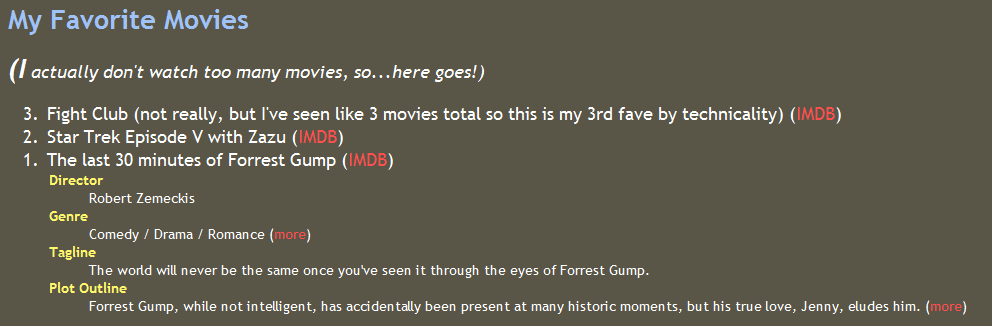

This lab is based on the lab assignment on the "Web Programming Step by Step" by Marty Stepp, Jessica Miller, and Victoria Kirst.
The purpose of this lab is to practice writing basic web pages with HTML and CSS and uploading them to the Web.
Create a page named aboutme.html that describes you. (You can use DreamWeaver or Notepad++). On your page, include some or all of the following information:
(You may be tempted to spend all 50 of your minutes on this part of the lab. But try to keep the page somewhat short so that you can attempt some of the other exercises.)
To see your page in the web browser, in Firefox, click File, Open File... and browse to your page file to open it.
Write your page using valid XHTML 1.1. Include a link from your page to the W3C XHTML Validator, using the following image and linking to the following site:
The next task will be to write a stylesheet for your page, so also include a link to the W3C CSS Validator, using the following image and linking to the following site:
For example, the following About Me page describes textbook coauthor, Victoria Kirst (between, but not including, the thick black lines):
About Victoria kirst
My name is Victoria and I am jolly clumsy , and four-eyed .
My Classes This Quarter
My Favourite Movies
(I actually don't watch too many movies, so...here goes!)
My Moods
Happy: Sad:
Fun Facts About My Neighbours
Exercise 2: Style Your Page with CSS (roughly 15 minutes)
Create a stylesheet named aboutme-style.css to improve the appearance of your About Me page. Your stylesheet should do the following without any modification to your HTML code:
For example, this is Victoria's styled version of her page in Exercise 1 (between, but not including, the thick black lines):
About Victoria kirst
My name is Victoria and I am jolly clumsy , and four-eyed .
My Classes This Quarter
My Favourite Movies
(I actually don't watch too many movies, so...here goes!)
My Moods
Happy: Sad:
Fun Facts About My Neighbours
Exercise 3: Validate Your Page and CSS
Next, validate your HTML and CSS code to make sure they match the strict XHTML 1.1 specifications. To run the validators, do the following:
The key thing is to get the green bar saying that your page is valid XHTML. If you see any yellow warnings about being tentatively valid, this is okay. Red errors are not okay.
Exercise 4: Upload Your Page to the Web
You can publish your page by uploading your files to the CIS department server cis-linux2.cis.temple.edu. Create a folder "aboutme" in the "~/public_html/" folder with permission 711. All files in "aboutme" folder need permission 644. Verify that you did this successfully by viewing your page in the web browser.
Exercise 5 (advanced): Advanced Style Techniques
If you manage to complete the first four exercises before lab time is up, edit your stylesheet to also do the following:
These are techniques that we have not covered in class, so you will need to use Google or a CSS reference such as W3Schools Once again, you should be able to make these stylistic changes without modifying your HTML.
For example:
Links: hover is not shown)

Drop-caps:

Exercise 6 (advanced): Favorite Movie
Choose one of the favorite movies or TV shows you listed and look it up on imdb.com. Include the content of the IMDB page in a nested list under the chosen movie's bullet.
For example:

Extra Credit: Exercise 7: Decrementing ol
Modify your About Me page to have your Top 3 movies or tv shows list in decreasing order, starting at 3 and counting downward to 1. The format of the list must look exactly the same as the default format of an ordered list, simply in reverse order. The only change you may make to your HTML is to switch the order of your list items, but otherwise all work must be done by CSS. We aren't going to give you any hints at all; you must figure it out on your own, using the web.
Note: This is very tricky! Hint: The property you are looking for is counter-increment.
For example:
